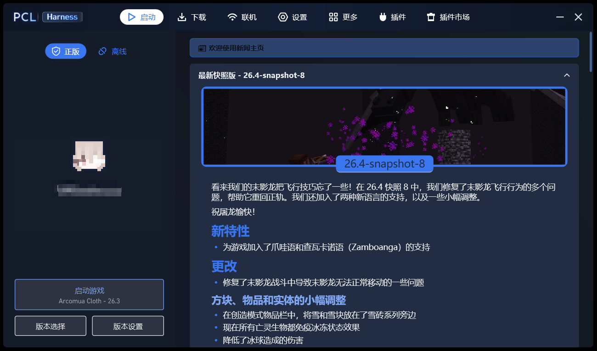
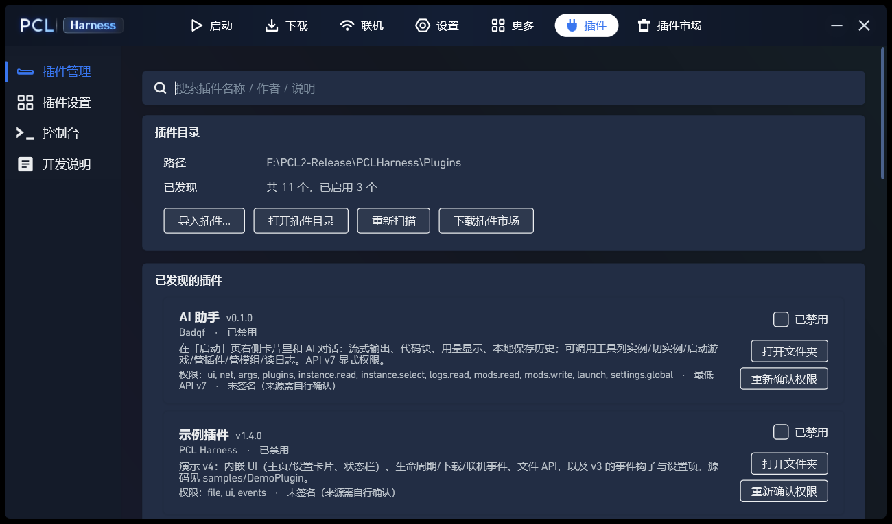
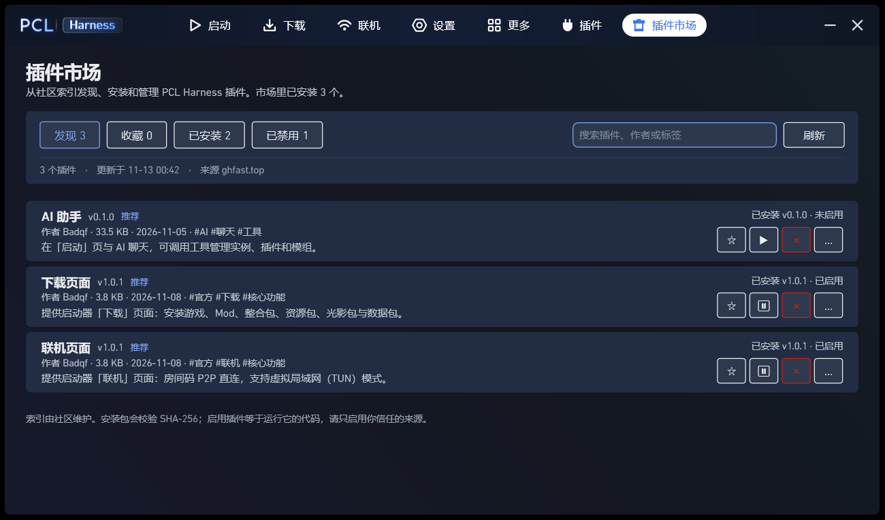
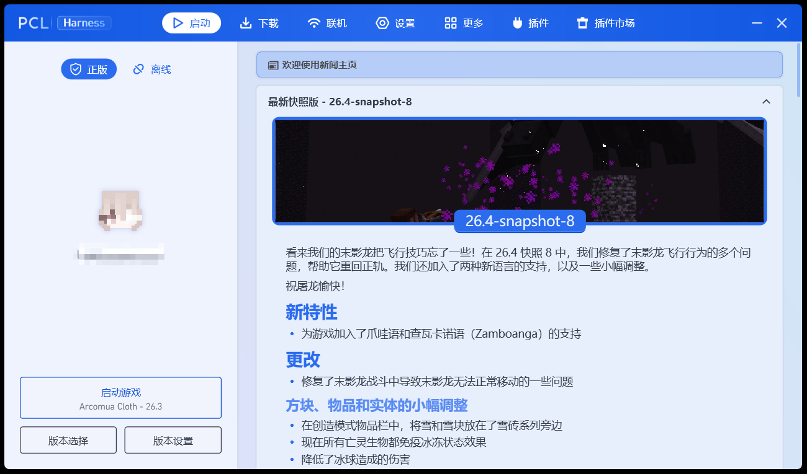
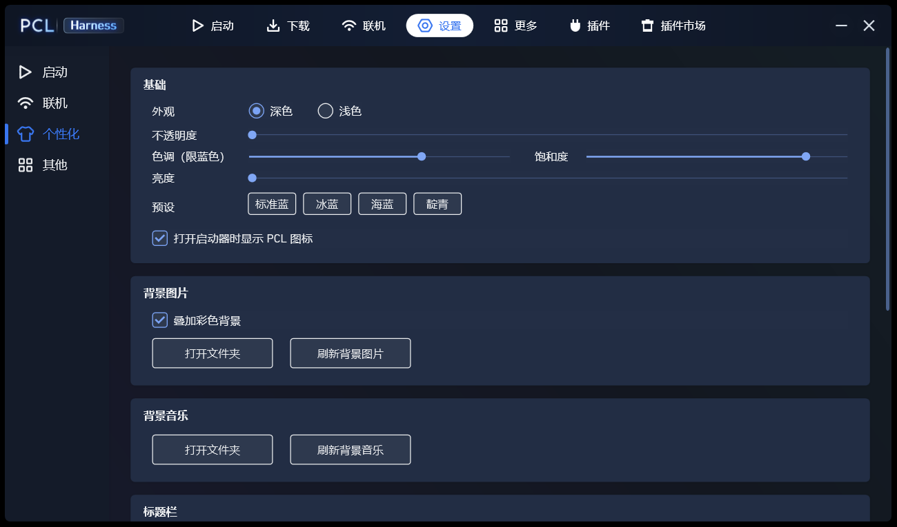

能装插件的启动器
PCL Harness 是 PCL2 开源版的二次开发。市场里的插件装上去就多一块界面；API v8 和 SDK 摆在那儿，你自己也能写一个。PCL2 原有的版本、下载、Mod、账号，一个不少。

启动下载联机设置更多插件插件市场
插件装上去，
启动器就多一块。
放进 Plugins 目录，或者在市场里点一下安装。插件能加一个页面、一张卡片、一个设置项、一条右键菜单——它想加什么，权限里都写着。
已经装好的插件在插件页里排成一行：版本、作者、权限、最低 API、签名来源，一眼看完。

- 装法
- 拖进 Plugins 目录，或市场点安装
- 权限
- 18 项，按低 / 中 / 高分级
- 停用
- 随时禁用；卸载进回收站
- 安装包
- 官方页面插件 3.8 KB
市场就在启动器里。
索引由社区维护，安装包校验 SHA-256，装错了可以直接回滚。3.9.5 里已经有三个条目。
不用开浏览器，不用下 zip 拖进文件夹。

| 条目 | 版本 | 体积 | 更新 | 权限 |
|---|---|---|---|---|
| 下载页面 | 1.0.1 | 3.8 KB | 2026-11-08 | ui |
| 联机页面 | 1.0.1 | 3.8 KB | 2026-11-08 | ui |
| AI 助手 | 0.1.0 | 34 KB | 2026-11-05 | 15 项 |
AI 助手是第三方插件，需要 API v7 和自己的 Key；Key 明文存在插件设置里。
先把 18 项权限签了。
每一项都有中文说明、风险分级和后果文案。中高风险在启用时弹一次；权限改过，就再确认一次。
拿
process权限，可以启动任意外部程序，等同于在你的电脑上执行代码。
低 · 8 项
ui界面events事件files文件net网络net.dynamic动态主机instance.read读实例logs.read读日志mods.read读模组
中 · 9 项
skin离线皮肤instance.install装内容launch启动游戏account账号信息settings.global全局设置instance.select切实例mods.write改模组args启动参数plugins插件管理
高 · 1 项
process外部进程
权限指纹只用来发现「权限改了」，不证明发布者是谁。
一个清单，
一个 DLL。
不用改启动器源码，不用等合并。VB 和 C# 都能写，放进插件目录点一下重新扫描就出现了。
API v8，9 个接口，18 项权限。示例在 samples/DemoPlugin。
plugin.json
{
"id": "hello",
"name": "你好插件",
"version": "1.0.0",
"author": "你",
"entry": "HelloPlugin",
"dll": "Hello.Plugin.dll",
"permissions": [ "ui" ]
}Public Class HelloPlugin
Implements PCL.IPclPlugin
Public Sub OnLoad(Host As PCL.PluginHost) _
Implements PCL.IPclPlugin.OnLoad
Host.Log("你好，插件跑起来了。")
End Sub
End Class- API
- v8
- 接口
- 9 个
- 权限
- 18 项，三级
- 文档
- PLUGIN-DEV.md
PCL2 原有的功能，
一个不少。
版本管理、下载、Mod、整合包、正版登录，还是 PCL 那一套布局和操作。配置放进 PCLHarness\，原版的文件一个都不动。
深浅两套外观，色相只在 200–230° 之间调——不是偷懒，是上游授权划的线。


- 标准蓝
- 冰蓝
- 海蓝
- 靛青
装上去。
然后把插件也装上去。
| 版本 | 3.9.5（VersionCode 469） | 发布 | 2026-11-12 |
|---|---|---|---|
| 体积 | 5.9 MB（6,156,288 字节） | 系统 | Windows 10 / 11 x64 |
| 依赖 | .NET Framework 4.8 | 许可 | 基于 PCL 的二次创作 |
从 GitHub Releases 下载。国内打不开时走加速通道，或者先看市场的镜像说明。